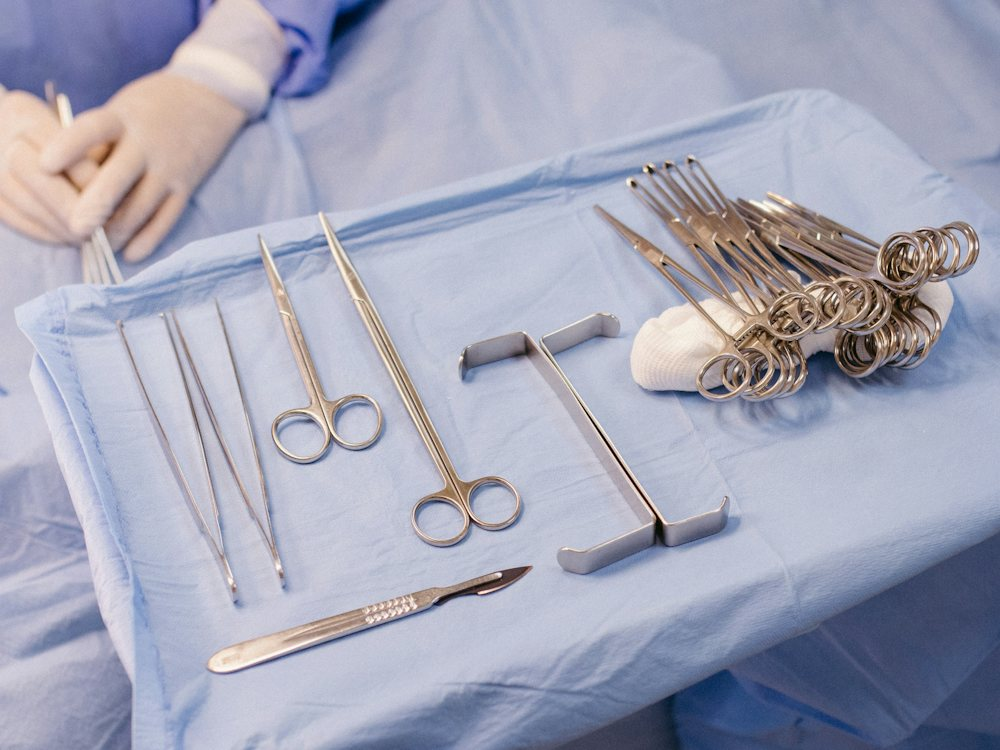

Circoncision Marseille · La circoncision
Ce qu'est l'intervention, pourquoi et à quel âge on la pratique, et comment elle est réalisée au cabinet.
Comprendre

La circoncision consiste à retirer le prépuce, le repli de peau qui recouvre le gland du pénis. C'est un acte chirurgical court, réalisé ici sous anesthésie locale.
Le cadre
La circoncision est un acte chirurgical. Ici, elle est réalisée par un chirurgien, avec les mêmes exigences d'hygiène et de sécurité qu'au bloc opératoire.
Le chirurgien vous reçoit en consultation, réalise lui-même l'intervention avec ses infirmiers et assure le suivi.
Pas d'anesthésie générale. L'intervention est courte et le patient rentre chez lui le jour même.
Instruments stériles ou à usage unique, salle dédiée et matériel d'urgence adapté à chaque âge, du nourrisson à l'adulte.